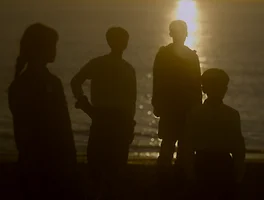

매거진 삼삼오오 · 프리뷰
에스퍼의 빛
<에스퍼의 빛> 프리뷰 - 모험, 그 달콤씁쓸한.

내겐 엄격함 속에서 쥐락펴락할 수 있었던 세계가 있었다 . 하지만 엄격함은 때때로 돌발 상황을 펼쳐내기도 한다 . 이건 모험과 사색의 경계에 선 우리의 내적 열망에 대한 탐구가 아니다 . 진정으로 전하고 싶은 말은 … 내게도 온몸에 음각처럼 패인 곳곳 열 ( 熱 ) 을 새긴 공유 세계가 있었다는 것 . 쾌락 , 고통 , 수치심 , 기쁨 . 그 달콤씁쓸한 모험의 순간들은 기억이라는 명명 아래 사지를 욱신거릴 만큼 드문드문 두드린다 . 나는 ‘ 내가 - 됨 ’ 의 선택지를 만들 수 있었다 . 특정할 수 없는 주기마다 자줏빛 눈을 가진 흡혈귀 캐서린이 되었고 , 백발의 긴 머리를 가진 어딘가 음울한 악마 레인이 되었으며 ( 자고로 중학교 1 학년까지 내 블로그 이름은 ‘ 저주 소녀 ’ 였다 ), 부모를 잃고 설원에서 홀로 자란 마법사 ( 한때 너무 몰입한 나머지 염력으로 난을 흔들어 보려고 했다 ), 이들이 뇌우처럼 내게 오기 전엔 사람들의 과거를 보며 예지몽을 꿈꾸는 신령이었다 . 나열하자면 , 무수한 이름이 화염처럼 얼굴을 덮치리라 . ‘ 나 ’ 를 선택한 사람들은 다소 엄격한 선택지 앞에서 여정을 써 내려간다 . 이건 행위이며 , 놀이가 된다 . 언어는 놀이의 소통망으로 그 세계의 공동체를 실뭉치처럼 엮었다 . 모험의 쾌락은 무엇이든 잃어도 되고 어떤 것이든 얻으려 해도 된다는 것으로부터 가장 거세게 발생한다 . 신체 접촉이 없었음에도 환희 속에서 손을 맞닿은 듯한 따스함을 느꼈다 . 그럼 나는 왜 이 모험을 두고 달콤씁쓸함을 노려보고 있나 ? 아마 공유 세계로 모험을 떠났을 당시 , 곁눈질로 보기만 했던 공유할 수 없는 세계의 모습 때문일 것이다 . 단순한 소통 오류 혹은 실패의 문제가 아니다 . 내가 모험이라고 여겼던 세계의 순간들을 감추게 되었던 내 · 외적 수치심과 고통 . 어째서 내 모험은 세계의 소멸 이후에 아무 때에나 공유할 수 있었을까 ? 달콤씁쓸한 모험이 펼쳐지는 화면 앞에서 ‘ 모험 ’ 이라는 사후 명명에 관한 즐거운 고통을 겪었다 . 난 초콜릿을 먹지 않지만 , 달콤씁쓸함의 맛은 누구보다 잘 알 듯하다 .
- 오오극장 관객프로그래머 이라진